행사개요
행 사 명 : 포스텍 박태준미래전략연구소 제7회 미래전략 포럼
주 제 : 인공지능(AI)의 발전과 미래사회 - 『또 다른 지능, 다음 50년의 행복』
기 간 : 2019년 11월 29일(금) 14:00 ~ 17:30
장 소 : 포항 라한호텔 6F(영일대 해수욕장)
프로그램
2019-11-29
시간
프로그램
14:00~14:30
개회사
김승환 포스텍 박태준미래전략연구소장
환영사
김무환 포스텍 총장
축 사
이강덕 포항시장
14:30~15:00
발제
장병탁 교수
서울대
인공지능 시대가 가져 올 미래의 변화
15:00~15:30
발제
이인아 교수
서울대
인공지능 시대
뇌의 변화와 인지의 변화
15:30~15:45
휴 식
15:45~16:15
발제
권호정 교수
연세대
인공지능 시대
바이오 기술의 변화
16:15~16:45
발제
권영선 교수
카이스트
인공지능 시대
경제 및 사회의 변화
16:45~17:45
종합토론
토론
학자
로봇
생명
경제 등 분야
연사
장병탁 교수
서울대
학교)
학력
본 라인 프리드리히 빌헬름 대학교 컴퓨터공학 (Informatik) 박사 (1992)
서울대학교 컴퓨터공학 석사 (1988)
서울
대학교 컴퓨터공학 학사 (1986)
연구 분야
뇌정보처리 모델링에 의한 기계학습 기반 사용자 의도 예측기술
지능형 추천 서비스를 위한 인지기반 기계학습 및 추론 기술
기계학습 기반 멀티모달 복합 정보 추출 및 추천기술
모바일 라이프로그를 이용한 상황 문맥 상에서의 행동 파악 기술
이인아 교수
서울대학교
학력
Ph.D. Neuroscience (2002)
Program in Neuroscience, Medical School, University of Utah, Salt Lake City, UT.
Supervisor: Raymond P. Kesner, Ph.D.
Thesis title: Behavioral probing of hippocampal circuits: Hippocampal subregional functions for encoding and
retrieval of spatial memory
M.A. Biopsychology (1998)
Psychology Department, Seoul National University, Seoul, Korea.
Supervisor: Choongkil Lee, Ph.D.
Thesis title: Dorsal lateral geniculate body of the dog: Three-dimensional model and anatomical characteristics
B.A. Psychology (1996)
Psychology Department, Seoul National University, Seoul, Korea.
연구 분야
- 뇌인지 공학
호정 교수
연세대학교
학력
1980 - 1984 서울대학교 농화학과 (학사)
1990 - 1992 동경대학교 생명공학과 (석사)
1992 - 1995 동경대학교 생명공학과 (박사)
연구 분야
- Chemical Biology/Genomics/Proteomics
권영선 교수
(한국과학기술원
학력
Ph.D. in Economics, Syracuse University, (2000)
M.P.A., in Public Policy, Seoul National University, (1989)
B.A., S in Public Administration, Yonsei University, (1986)
연구 분야
Industrial organization (IT and Telecom Industries)
Innovation in education, Artificial Intelligence
Urban economics/Transportation policy
Spectrum management policy
참석자
- 포항시장외
- 포스텍 총장외
- 박태준미래전략연구소장, 박태준미래전략연구소 연구위원외
- 청년비전캠프 참가자, 대학(원)생 공모전 참가자외
- 포항시민 누구나
포럼 참가 신청하기
※ 11월 22(금)에 마감됩니다.
내용
포항공과대학교 박태준미래전략연구소는 국가와 사회가 당면한 문제에 대하여 연구하고 이에 대한 대응전략을 모색하여 그 결과를 사회와 공유함으로써 더 나은 한국사회 발전에 기여하고자 포럼을 개최합니다.
인공지능은 이미 우리 삶의 많은 부분에 변화를 가져오고 있습니다.
제7회 미래전략 포럼은 인공지능이 어떻게 진화하고 우리의 삶을 바꿀 것인지에 대해 석학들의 발표와 심도 있는 토론의 시간을 갖고자 합니다.

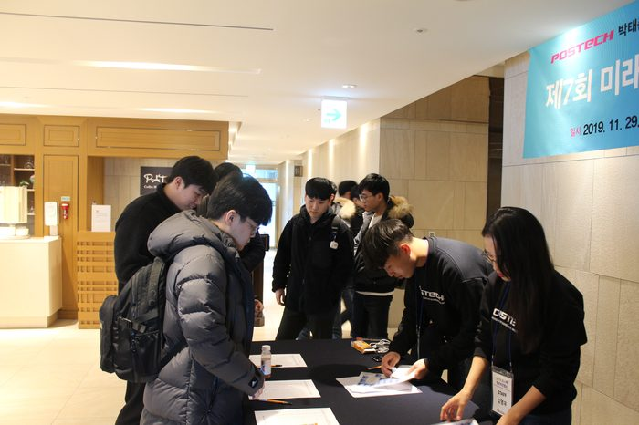
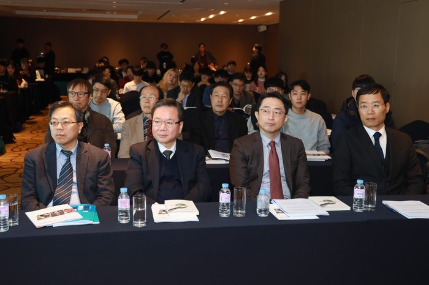
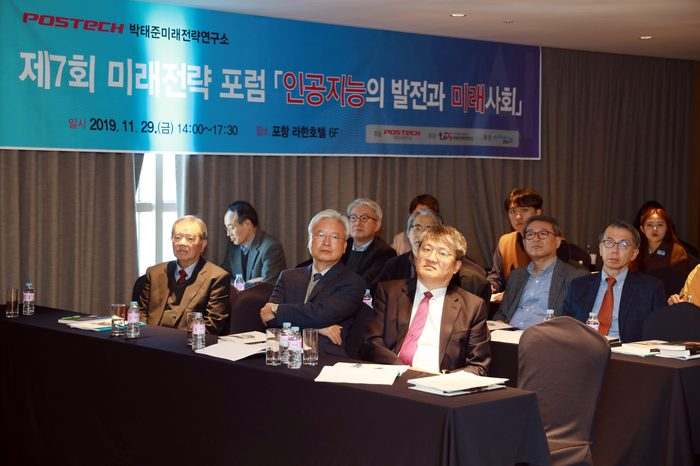
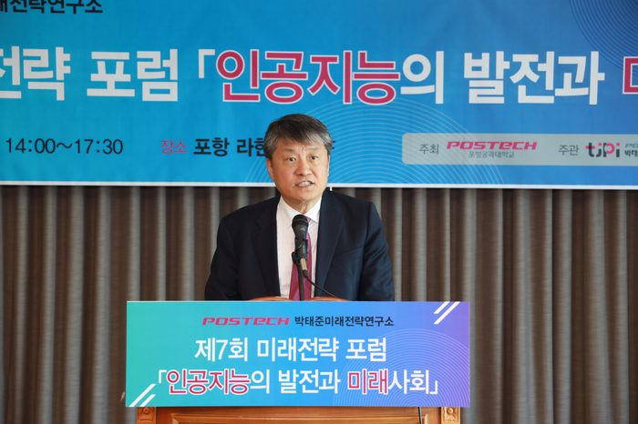
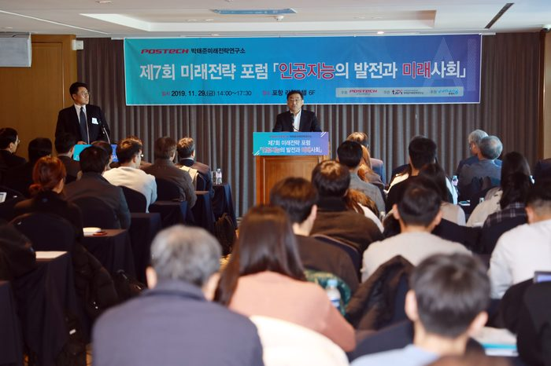
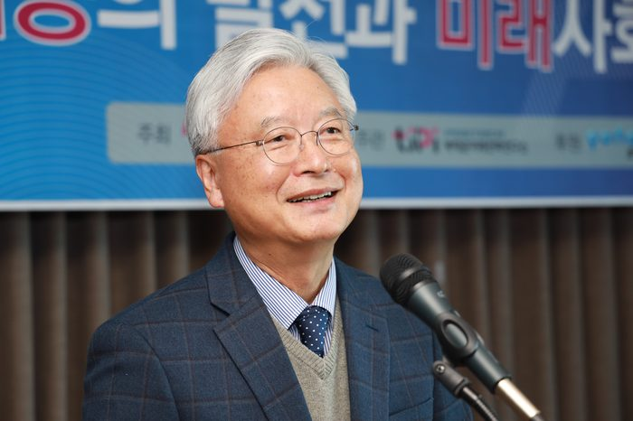
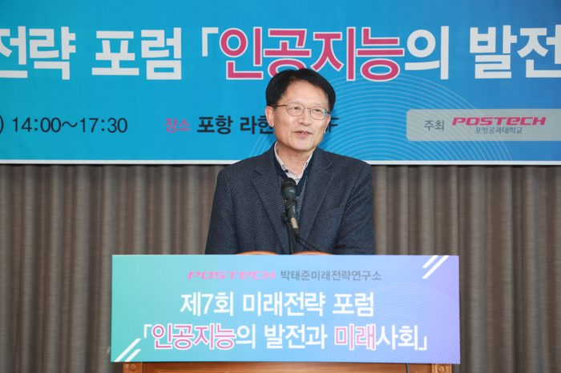
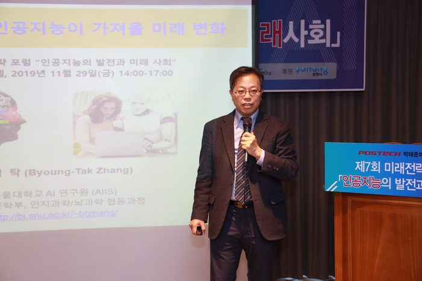
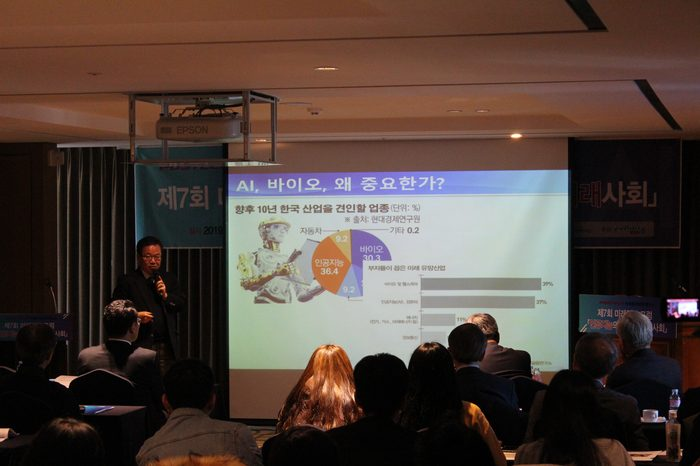
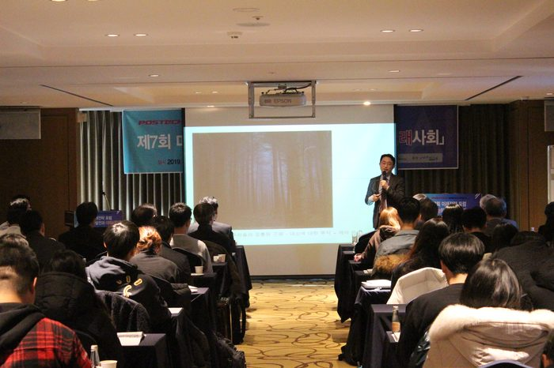
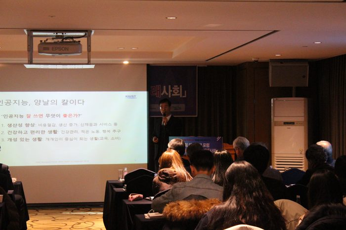
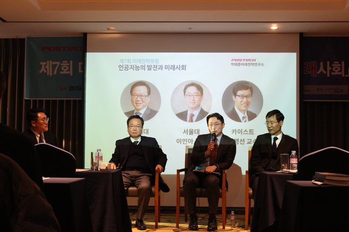
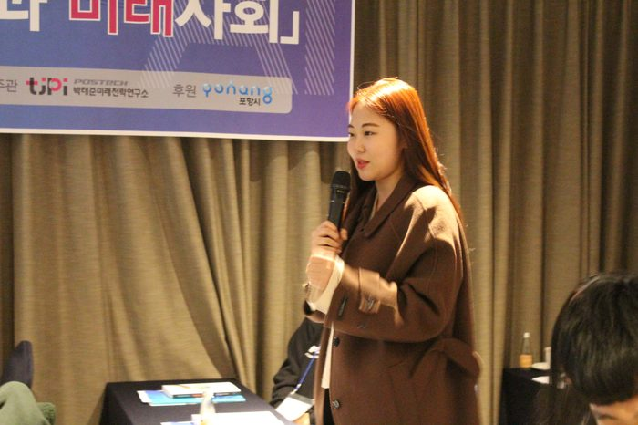
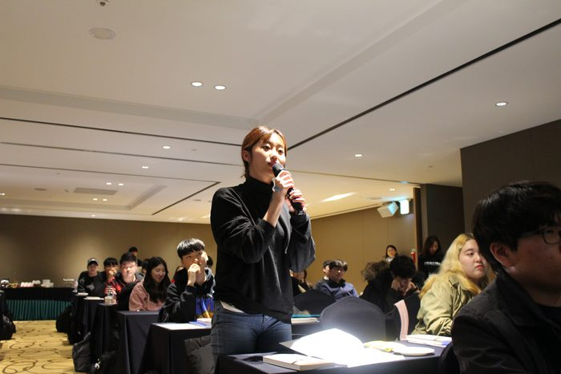
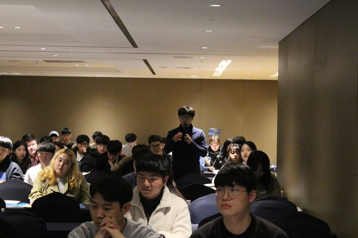
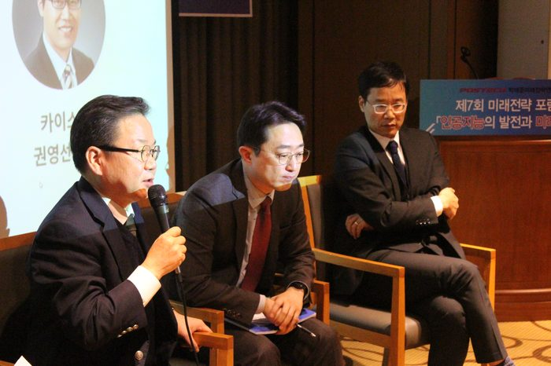
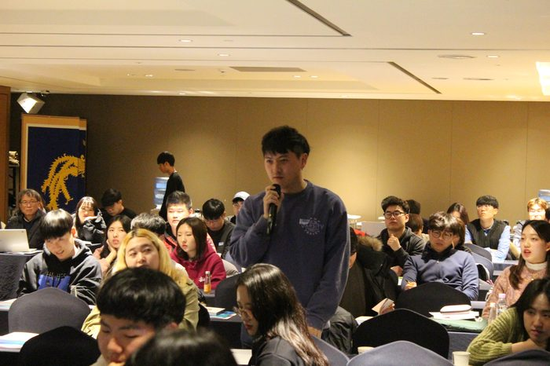
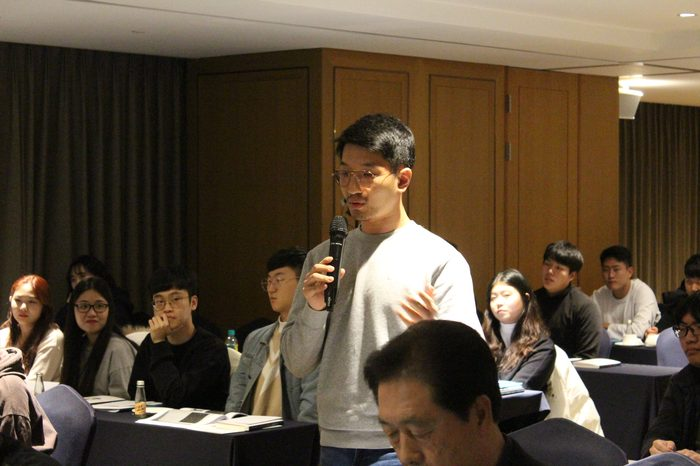
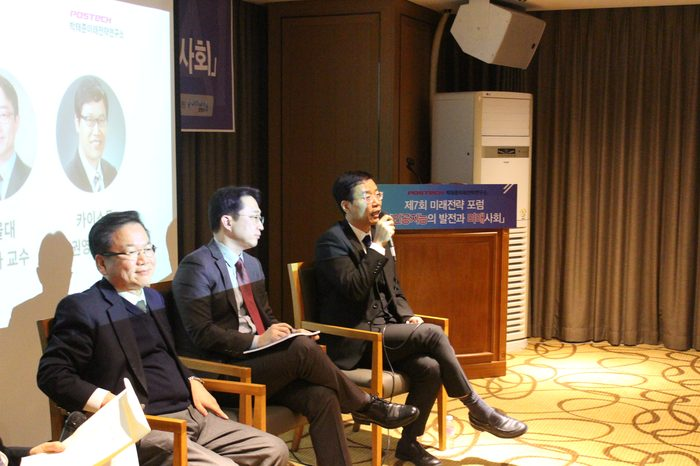
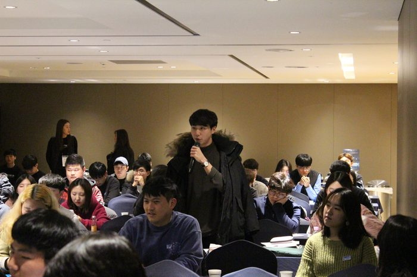
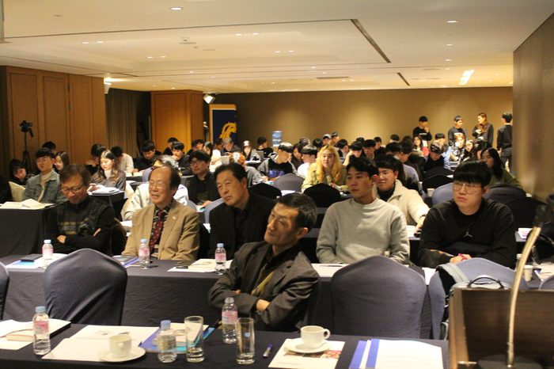
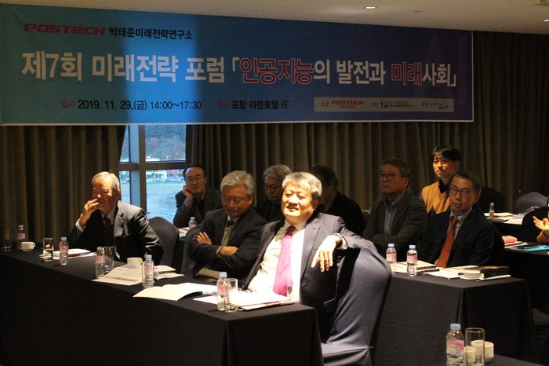